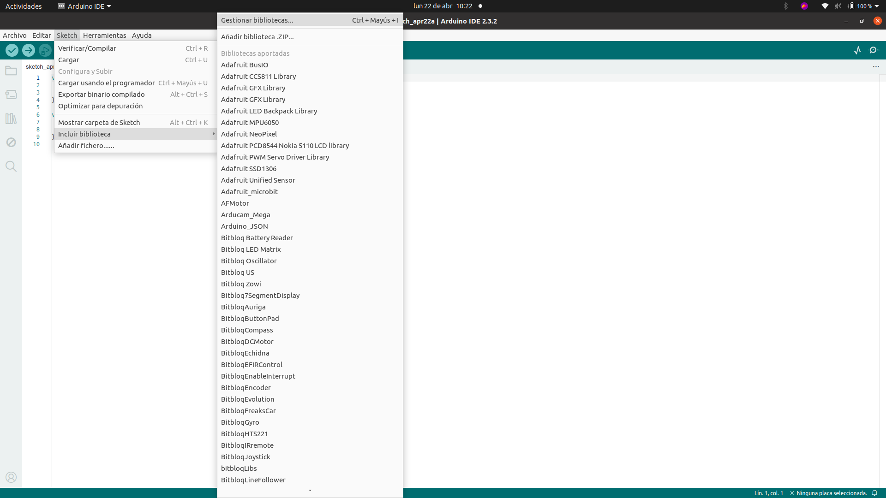
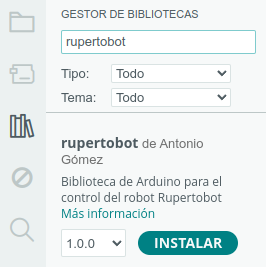

Librería para Arduino: conceptos básicos
Introducción
Bien. Si has venido a esta sección, habrá sido, o bien por error, o bien curioseando. O quizás tienes cierta experiencia en la programación con C++ (el lenguaje de programación que utiliza la IDE de Arduino). No ignorarás, entonces, que dicha IDE te proporciona, en ocasiones, la oportunidad de instalar librerías o bibliotecas (libraries, en inglés) para añadir funcionalidades a los comandos básicos de lectura y escritura analógicas y digitales en los distintos pines de nuestra queridísima placa.
Pues bien, nuestro Rupertobot cuenta con su propia librería para que puedas programarlo y hacerlo funcionar fácilmente. Para ello, desde la IDE de Arduino, vete al menú Sketch->Incluir biblioteca->Gestionar bibliotecas:

(Tampoco hace falta que te compliques tanto; si lo prefieres, puedes usar el icono de los libros que hay a la izquierda).
Usa el buscador con la palabra "rupertobot", y ¡tachááááán!:

Le damos a INSTALAR y ¡hala!. ¡Ya puedes programar al ruperti como un profesional!. Deja primero que te de algunos conceptos básicos en el siguiente apartado...
Declaración de Rupertobot
Cuando estás utilizando una librería en Arduino, en primer lugar debes incluirla al principio de tu programa principal (antes de setup() y loop()):
<include #rupertobot.h>
Esto indicará al compilador que debe tomar como referencia al archivo rupertobot.h, que contiene todos los comandos disponibles para este robot, y que apunta a su vez a rupertobot.cpp, que es el que desarrolla la programación de cada uno de dichos comandos. Tampoco te compliques demasiado, la cuestión es que lo tienes que hacer sí o sí.
A continuación, y como es usual en la Programación Orientada a Objetos (POO), debes declarar un objeto de clase rupertobot que responderá a un nombre concreto, que tienes que elegir. Yo, para estos ejemplos, usaré el nombre ruperti:
rupertobot ruperti;
A partir de aquí, en el bucle loop() podrás consignar tu programa, que puede o no utilizar los sensores IR y US de nuestro robot, en cuyo caso tendrás que indicar su patillaje en setup(). ¡Empecemos con algo sencillo!.
Movimientos básicos
Hay dos conjuntos de órdenes para mover a Rupertobot, dependiendo de que queramos indicar la distancia objetivo en revoluciones (vueltas que dan las ruedas) o en cm o grados sexagesimales. Empezaremos explorando el conjunto de órdenes por revolución, pero antes aclaremos (por si eres muy novato en el lenguaje C++) algunos conceptos:
Tipos de valor (void, int, float): En C++ hay que especificar el tipo de valor con el que estamos trabajando. void significa vacío (no hay que indicar valor), float significa número decimal e int quiere decir número entero.
Así, cuando queramos utilizar, por ejemplo, la función avanza (la primera en la próxima tabla), veremos que se nos explica como void avanza(float laps, int speed);. Esto quiere decir tres cosas:
- void avanza significa que no hay que esperar que avanza nos proporcione valor alguno. Este comando se ejecutará sin más y a continuación se pasará a la siguiente orden.
- float laps indica que tenemos que meter entre paréntesis un primer número, que puede ser decimal, referente al número de vueltas que queremos que Rupertobot de a sus ruedas.
- int rpm indica que el segundo número que hay que proporcionar a la función avanza es de tipo entero (sin decimales), indicando la velocidad en revoluciones por minuto (rpm).
Por lo tanto, si quisiéramos, por ejemplo, dar la orden a Rupertobot de que vaya hacia adelante dos vueltas y media a 10 rpm, habría que escribir en el sitio correspondiente en loop():
ruperti.avanza(1.5,10);
Como puedes ver, la orden tiene que ir siempre precedida por el nombre que has usado para tu Rupertobot (ruperti, en este ejemplo), precedida por un punto.
Ahora sí, vamos a repasar los comandos de movimiento, empezando por los de revoluciones:
MOVIMIENTOS POR REVOLUCIONES
| COMANDO | DESCRIPCIÓN |
| void avanza(float laps, int speed); | Hacia adelante las vueltas indicadas, a la velocidad especificada en rpm |
| void atras(float laps, int speed); | Hacia atrás las vueltas indicadas, a la velocidad especificada en rpm |
| void izquierda(float laps, int speed); | Gira hacia la izquierda las vueltas indicadas, a la velocidad especificada en rpm |
| void derecha(float laps, int speed); | Gira hacia la derecha las vueltas indicadas, a la velocidad especificada en rpm |
MOVIMIENTOS POR cm Y GRADOS SEXAGESIMALES
| COMANDO | DESCRIPCIÓN |
| void avanzacm(float cm, int speed); | Hacia adelante los centímetros indicados, a la velocidad especificada en rpm |
| void atrascm(float cm, int speed); | Hacia atrás los centímetros indicados, a la velocidad especificada en rpm |
| void giraIzquierda(float grados, int speed); | Gira hacia la izquierda los grados indicados, a la velocidad especificada en rpm |
| void giraDerecha(float grados, int speed); | Gira hacia la derecha los grados indicados, a la velocidad especificada en rpm |
Ejemplo de uso
Vamos a utilizar lo aprendido en dos programas que van a hacer lo mismo: dibujar una T. Al final del programa, tu Rupertobot debería acabar exactamente en el punto en el que empezó, con la misma posición. ¡Veamos cómo se desarrollaría!:
#include <rupertobot.h>
//Declaramos a nuestro robot como ruperti
rupertobot ruperti;
void setup() {
//Nada que especificar en setup
}
void loop() {
//Avanzo, giro y retrocedo dibujando una T
ruperto.avanza(2,10);
ruperto.izquierda(0.5,10);
ruperto.avanza(1,10);
ruperto.derecha(1,10);
ruperto.avanza(2,10);
ruperto.atras(1,10);
ruperto.derecha(0.5,10);
ruperto.avanza(2,10);
ruperto.izquierda(1,10);
//Fin de programa
while(1);
}
Con este programa, el rupertobot avanzaría por revoluciones de sus ruedas (unos 25 cm por revolución). El mismo programa, pero indicando distancias en cm, sería:
#include <rupertobot.h>
//Declaramos a nuestro robot como ruperti
rupertobot ruperti;
void setup() {
//Nada que especificar en setup
}
void loop() {
//Avanzo, giro y retrocedo dibujando una T
ruperto.avanzacm(20,10);
ruperto.giraIzquierda(90,10);
ruperto.avanzacm(10,10);
ruperto.giraDerecha(180,10);
ruperto.avanzacm(20,10);
ruperto.atrascm(10,10);
ruperto.giraDerecha(90,10);
ruperto.avanzacm(20,10);
ruperto.giraIzquierda(180,10);
//Fin de programa
while(1);
}
Éste es, a grandes rasgos, el conjunto de órdenes que atañe a los movimientos del Rupertobot. En otra sección, hablaremos de sensores y actuadores.
Descarga los programas
Ejemplo de programa utilizando la librería Rupertobot para moverlo por revoluciones
Ejemplo de programa utilizando la librería Rupertobot para moverlo por centímetros y grados sexagesimales